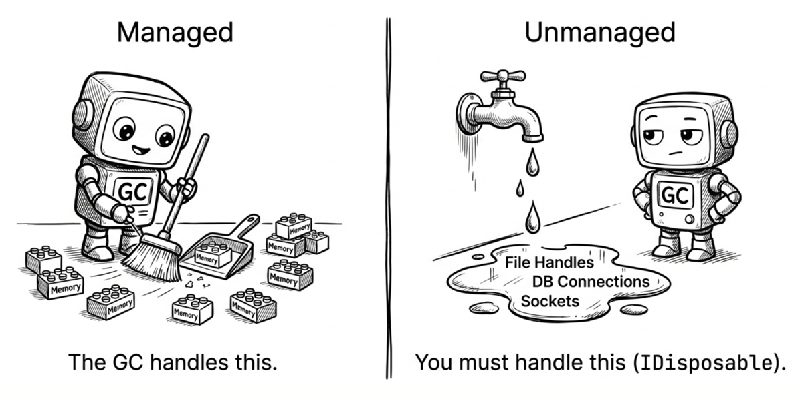
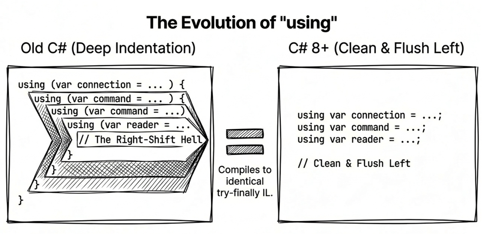

第 5 章：錯誤處理與資源管理
寫出「會動」的程式碼不難，但要寫出「不會隨便崩潰」的穩健（robust）程式碼，卻需要對錯誤處理與資源管理有深刻的理解。在 .NET 的世界裡，例外（exceptions） 是處理錯誤的標準機制，而 IDisposable 介面 則是管理資源的核心。
然而，這兩個主題常常是開發者最容易踩坑的地方：
- 錯誤處理：濫用例外會拖慢效能，但完全不用例外又會讓錯誤無聲無息地傳播。如何在「正確性」與「效能」之間取得平衡？
- 資源管理：忘記釋放資源會導致記憶體洩漏、檔案鎖定、資料庫連線耗盡等問題。如何確保資源總是被正確釋放，即使發生例外？
- 非同步資源釋放：隨著非同步程式碼的普及，傳統的
Dispose已經不夠用。何時該用DisposeAsync？
本章會從兩條主線切入：錯誤發生時該如何表達與傳遞，以及資源用完之後該如何確實釋放。接下來會依序討論：
- 例外處理的黃金法則與常見反模式
try-catch-finally的正確使用時機using語句與IDisposable模式- 非同步資源管理（
IAsyncDisposable與await using） - 標準 Dispose 模式的實作細節（含 finalizer 支援）
理解這些做法之後，你會比較知道哪些錯誤該交給例外處理，哪些失敗應該用回傳值表達，以及哪些資源需要明確釋放。
5.1 錯誤處理（exception handling）
例外處理不只是把程式碼包在 try-catch 區塊裡那麼簡單。正確的使用方式能讓你的程式更容易除錯與維護，錯誤的使用則可能導致效能問題或隱藏真正的錯誤根源。
C# 採用所謂的「結構化例外處理」語法，也就是「讓正常流程保持清晰，將錯誤處理邏輯分離」。然而，這也帶來了幾個常見的問題：
- 何時該拋出例外？ 使用者輸入錯誤該用例外還是回傳值？
- 如何正確捕捉例外？ 捕捉所有例外（
catch (Exception)）有什麼問題？ - 如何重新拋出例外？ 直接
throw ex;會怎樣？ - 如何確保資源釋放？ 即使發生例外，也要關閉檔案或連線
接下來先從例外處理開始，依序看幾個最容易影響可讀性與除錯效率的設計選擇：
- 例外只用於「例外」狀況（Tester-Doer 與 Try-Parse 模式）
- 捕捉特定例外而非籠統捕捉
- 使用例外篩選器（
when）提升除錯效率 throw運算式的簡潔用法- 正確重新拋出例外（保留堆疊追蹤）
- 使用
finally子句確保資源釋放
.NET 9 的效能提升
.NET 9 採用了基於 NativeAOT 的全新例外處理實作，效能提升了 2 到 4 倍。即使需要使用例外處理，其效能開銷也比以往更小。不過，對於可預期的錯誤（如使用者輸入），仍建議使用
TryParse等模式。
例外只用於「例外」狀況
先來看一個典型的寫法：用 try 陳述式包住正常流程的程式碼區塊，並將處理例外狀況的程式碼寫在 catch 區塊。像這樣：
try
{
... // 正常流程的程式碼
}
catch
{
... // 意外狀況發生時，會執行此區塊的程式碼
}這個 try...catch 的寫法可以這樣來理解：「嘗試執行一些程式碼，看看會不會出錯。萬一真的發生意外狀況，就中斷目前的正常流程，並且把捕捉到的例外交給 catch 區塊來繼續處理。」
不過，最重要的一條守則是：不要將例外用於一般的控制流程。例外處理的機制在 .NET Runtime 中有額外的效能開銷（雖然現代版本已大幅優化，但產生堆疊追蹤仍有成本）。以下範例展示了兩種寫法：
// 不建議：使用例外控制流程
try
{
int value = int.Parse(input);
}
catch (FormatException)
{
// 處理格式錯誤
}
// ✔ 建議：使用 TryParse（Try-Parse 模式）
if (int.TryParse(input, out int value))
{
// 成功
}
else
{
// 處理錯誤
}這個對比可以這樣理解：例外應該用來處理「意外」的情況，而非「預期中的失敗」。當你的程式預期使用者可能輸入錯誤格式（這很正常），就不該用例外來控制流程，而應該用 TryParse 這種 Try-Parse 模式。這不僅避免了例外拋出的效能開銷，也讓程式碼的意圖更清晰。至於 Tester-Doer 模式，稍後會再說明。
捕捉特定例外
盡量避免捕捉所有例外（catch (Exception ex)），除非是在應用程式的最上層（例如記錄未處理的例外）。如果在中間層就籠統捕捉所有例外，可能會把程式 bug 或呼叫端原本能處理的錯誤一起攔下來，讓真正的問題變得更難追蹤。捕捉特定例外能讓你針對不同錯誤情境做出正確回應。
catch 子句有多種寫法，你可以根據需要選擇合適的形式：
// 捕捉特定例外，並透過變數存取例外物件
catch (FileNotFoundException ex)
{
Console.WriteLine(ex.Message);
}
// 只關心例外類型，不需要存取例外物件
catch (IOException)
{
// 處理 I/O 錯誤
}
// 捕捉所有例外（通常只用於最外層）
catch
{
// 前面的 catch 都未處理的例外，會落到這裡
}透過捕捉特定例外，你能夠對不同的錯誤情境提供具體的處理邏輯（例如：檔案找不到 vs. 權限不足），而不只是籠統地說「發生錯誤」。這讓你的程式在遇到問題時能夠更精準地回應，而不是一律顯示「系統發生錯誤」這種讓使用者摸不著頭緒的訊息。
例外篩選器（exception filters）
從 C# 6 開始，你可以使用 when 關鍵字來篩選例外。這比在 catch 區塊中判斷並重新拋出（re-throw）更有效率，因為 when 條件式會在堆疊展開（stack unwinding）之前評估；如果條件不成立，例外會直接繼續往外尋找其他處理器，而不必先進入 catch 再重新拋出。
try
{
MakeRequest();
}
catch (HttpRequestException ex) when
(ex.StatusCode == HttpStatusCode.NotFound)
{
// 只處理 404 Not Found
Console.WriteLine("資源不存在");
}
catch (HttpRequestException ex)
{
// 處理其他 HTTP 錯誤
Console.WriteLine($"請求失敗: {ex.Message}");
}例外篩選器的最大優勢在於它是在「堆疊展開」（stack unwinding）之前執行的。這表示你在評估篩選條件時，仍能保有原始呼叫堆疊與當下的區域狀態；在偵錯工具掛載且啟用了適當的例外中斷設定時，除錯器比較容易顯示原始拋出點，而不是已進入 catch 之後的位置。
也就是說，when 不只是讓 catch 條件更精準，也能讓你在追查問題時保留更多現場資訊。
正確地重新拋出例外
如果你在 catch 區塊中需要將例外往上拋，請務必使用 throw; 而不是 throw ex;。
try
{
// ...
}
catch (Exception ex)
{
Log(ex);
// ✘ 錯誤：這會重置堆疊追蹤（stack trace），讓除錯變得困難
// throw ex;
// ✔ 正確：保留原始堆疊追蹤
throw;
}這裡有個容易踩到的小細節：throw ex 在語法上合法，卻會改變例外物件上的堆疊資訊。差異如下：
- 單純寫
throw：會保留原本的堆疊追蹤資訊（stack trace）。也就是說，透過堆疊追蹤資訊，你還能追溯到原始例外發生的地方。 - 寫
throw ex：會重設堆疊追蹤資訊，這將導致呼叫端無法透過例外物件的StackTrace屬性得知引發例外的源頭是哪一行程式碼。若你需要對外提供較高層的錯誤語意，應該包裝成新的例外並保留在InnerException，而不是用throw ex破壞原始堆疊。

呼叫堆疊與堆疊追蹤
堆疊追蹤（stack trace）是一個字串，裡面包含了當前呼叫堆疊（call stack）裡面的所有方法的名稱，以及方法所在的程式碼行號——如果編譯時有啟用除錯資訊的話。
呼叫堆疊指的是一個記憶體區塊，其中保存了某一條執行緒當時的所有方法呼叫的資訊，例如傳入方法的參數、方法的區域變數等等。
throw 運算式
從 C# 7 開始，throw 可以作為運算式（expression）使用，而不僅限於陳述式。這讓我們能在更多場合拋出例外：
// 在運算式主體成員中使用
public string GetName() => throw new NotImplementedException();
// 在三元運算子中使用
string ValidateInput(string input) =>
input != null ? input.Trim() :
throw new ArgumentNullException(nameof(input));
// 在 null 合併運算子中使用
string result = userInput ??
throw new ArgumentNullException(nameof(userInput));原始碼： DemoThrowExpressions
這些寫法的共同點是：例外不再只能出現在獨立的 throw 陳述式中，而是可以放進需要產生值的地方。對於「值不存在就不該繼續」的檢查，這能讓失敗條件貼近實際使用的位置。
Note
throw null;的執行結果確實會變成NullReferenceException，但這種寫法晦澀且沒有實務價值，應避免在正式程式碼中使用。
ArgumentNullException.ThrowIfNull（.NET 6+）
上一節介紹了 throw 運算式搭配 ?? 來驗證 null 參數。從 .NET 6 開始，有了更簡潔的專用方法：
// 傳統寫法
void ProcessData(string data)
{
if (data == null)
{
throw new ArgumentNullException(nameof(data));
}
// 處理資料
}
// .NET 6+ 簡化寫法
void ProcessData(string data)
{
ArgumentNullException.ThrowIfNull(data);
// 處理資料
}這個 ThrowIfNull 輔助方法不僅讓程式碼更簡潔，還能在你沒有手動寫 nameof(data) 的情況下，自動把參數名稱帶進例外物件裡；編譯器會在呼叫端把引數名稱提供給這個方法。
例如 ArgumentNullException.ThrowIfNull(data) 在 data 為 null 時，拋出的例外會知道出問題的參數名稱是 “data”，讓錯誤訊息更明確。
.NET 後來的版本又陸續添加了其他輔助方法，以下是相關文件的連結：
- ArgumentException.ThrowIfNullOrEmpty 方法：如果字串是
null或空字串，就拋出例外。 - ArgumentException.ThrowIfNullOrWhiteSpace 方法：如果字串是
null或只包含空白字元，就拋出例外。
針對數值參數的檢查，.NET 8 開始透過 ArgumentOutOfRangeException 類別提供了許多靜態方法，讓程式碼更明確、好理解：
ArgumentOutOfRangeException.ThrowIfNegative(value)：如果數值為負數，就拋出例外。ArgumentOutOfRangeException.ThrowIfZero(value)：如果數值為零，就拋出例外。ArgumentOutOfRangeException.ThrowIfGreaterThan(value, other)：如果value大於other，就拋出例外。ArgumentOutOfRangeException.ThrowIfLessThan(value, other)：如果value小於other，就拋出例外。
這些方法在檢查 ID、索引或數量時很實用，而且能自動帶入參數名稱，讓錯誤訊息更清楚。
包裝例外並保留內部例外
有時候你需要拋出一個不同類型的例外，例如將低階的技術細節轉換為更具語意的錯誤訊息。此時應該將原始例外保存在新例外的 InnerException 屬性中：
DateTime StringToDate(string? input)
{
ArgumentNullException.ThrowIfNull(input);
try
{
return DateTime.Parse(input);
}
catch (FormatException ex)
{
// null 會由 ThrowIfNull 處理；這裡只包裝格式錯誤
throw new ArgumentException("無效的日期字串。", nameof(input), ex);
}
}這樣做的好處是你可以把不同錯誤情況清楚區分開來：null 參數會直接得到 ArgumentNullException，而格式不合法的字串則會被包裝成較高階的 ArgumentException。呼叫端既能看到較貼近 API 語意的錯誤訊息，又能透過 ParamName 得知是哪個引數有問題，並且藉由 InnerException 屬性追蹤到底層的實際原因（FormatException）。
Exception 類別的重要屬性
知道例外從哪裡來、為什麼發生，通常比單純知道「有錯」更重要。System.Exception 是所有例外的基礎類別，以下範例示範幾個除錯時最常用的屬性：
try
{
// 可能引發例外的程式碼
}
catch (Exception ex)
{
// Message：簡短的錯誤描述
Console.WriteLine($"錯誤訊息：{ex.Message}");
// StackTrace：完整的呼叫堆疊，顯示例外發生的路徑
Console.WriteLine($"堆疊追蹤：{ex.StackTrace}");
// InnerException：包裝的內部例外（如果有的話）
if (ex.InnerException != null)
{
Console.WriteLine($"內部例外：{ex.InnerException.Message}");
}
}閱讀例外資訊時，通常可以先看 Message 確認表面錯誤，再看 StackTrace 找出發生位置；如果例外是經過包裝的，InnerException 往往才是最接近根因的線索。
Exception 類別的繼承關係
理解常用屬性之後，再回頭看例外型別的繼承關係，會更容易判斷該捕捉哪一種例外。System.Exception 是所有例外的共同祖先（基礎類別）。在繼承樹上常會看到 SystemException 和 ApplicationException 這兩個早期分類，但實務上更重要的是理解各個具體例外型別本身的語意。
SystemException：這是許多 .NET 內建例外的共同基底，例如
ArgumentException、NullReferenceException、IOException等。但這不代表它們都屬於同一類錯誤；像ArgumentException或IOException在很多情況下仍然是可預期且可處理的，而NullReferenceException則通常代表程式邏輯上的 bug，不應以catch作為主要處理策略。ApplicationException：這個型別早期曾被設計來作為應用程式自訂例外的基礎類別，但現代 .NET 並不特別建議這樣做。設計自訂例外時，通常直接繼承自
Exception即可。
了解這個繼承關係有助於你理解為什麼 catch (Exception) 會捕捉所有例外，也能提醒你：捕捉範圍愈寬，愈需要明確理由。在設計自訂例外類別時，通常也不需要特地繼承 ApplicationException。
補充知識：算術溢位檢查
預設情況下，執行期 的整數運算溢位通常不會拋出例外，而是會自動「繞一圈」變成負值（例如先把
int.MaxValue存進變數，再做max + 1，結果會變成int.MinValue）。不過，如果是編譯期可決定的常數運算式（constant expression），它預設會在 checked context 中求值，因此發生溢位時編譯器會直接報錯；若你明確放在unchecked中，則可改為允許溢位。若你希望在數值爆掉時收到通知（例如計算金額），可以使用checked區塊：checked { int balance = int.MaxValue; balance++; // 這行會拋出 OverflowException }相反地，如果你想要明確忽略溢位檢查，可以使用
unchecked區塊。這在一般商業邏輯開發中較少用到，但了解其存在有助於應對特殊需求。
finally 子句：確保資源釋放
finally 區塊中的程式碼無論是否發生例外都會執行，這使它成為釋放資源的理想位置：
StreamReader? reader = null;
try
{
reader = new StreamReader("app.config");
var content = reader.ReadToEnd();
Console.WriteLine(content);
}
catch (FileNotFoundException ex)
{
Console.WriteLine($"找不到檔案：{ex.Message}");
}
finally
{
// 無論是否發生例外，都會執行這裡的程式碼
reader?.Dispose();
}運作方式如下：
try區塊中的任何一行程式碼都有可能發生意想不到的錯誤，而當某一行程式碼出錯時，try區塊中剩下的程式碼就不會被執行到，因為此時會立刻跳到某個catch區塊（如果有的話）；待某catch區塊執行完畢，便會執行finally區塊的程式碼。- 即使在
try區塊中的例外沒有被任何catch捕捉，finally區塊仍然會執行，之後例外會繼續往外層拋出。這等於是在語言層級確保了釋放資源的動作一定會執行（除非在執行到finally區塊之前，應用程式就被強制中止）。
Finalizer（終結器）：最後的防線
除了 finally 區塊，C# 還提供了終結器（finalizer），它會在物件被垃圾回收器（GC）回收之前執行。終結器的語法類似建構式，但前面加上 ~ 符號：
class ResourceWrapper
{
~ResourceWrapper() // 終結器
{
// 釋放非託管資源
}
}請注意，finalizer 有諸多限制和效能成本：
- 會降低物件的配置與回收效能
- 延長物件的生命週期（需要等到下次 GC 才會真正釋放）
- 無法預測執行順序和時機
- 不應該引用其他可終結的物件
- 不應該拋出例外或阻塞執行緒
因此，除非絕對必要，否則不要使用 finalizer。對大多數情況來說，IDisposable 模式已經足夠。終結器通常只在包裝非託管資源控制代碼（如 Windows API 返回的原生指標）時才真正需要，因為這類資源不是 GC 能直接代你關閉的東西。
另外，教學範例有時會為了觀察流程而在終結器裡寫 Console.WriteLine，但那僅止於示範。正式程式碼應避免在終結器中進行 I/O、記錄或其他可能失敗／阻塞的操作。若你在 Dispose(bool disposing) 中放了除錯輸出，也應限制在 disposing == true 的路徑。
若你確實需要同時實作 IDisposable 和終結器，可使用稍後介紹的標準 Dispose 模式。那個模式會把「手動釋放」與「由 GC 作為備援釋放」兩條路徑分清楚。
5.2 資源管理
在 .NET 中，記憶體由 垃圾回收器（GC） 自動管理，這就像公司裡有專門的清潔人員會定時幫你清掉桌上的垃圾（不再使用的物件）。
但要注意的是，清潔人員通常沒有權限進入機房或開啟保險箱。同樣的，GC 只能回收記憶體中的託管物件（managed objects）；如果某個物件背後持有外部資源（例如檔案控制代碼、資料庫連線、socket、原生控制代碼），就必須透過 Dispose 明確釋放。因此，IDisposable 的重點不只是「非託管」三個字，而是讓這類需要及時釋放的資源能在適當時機被清理。

開發者在資源管理上常遇到的挑戰包括：
- 忘記釋放資源：導致檔案鎖定、記憶體洩漏、連線池耗盡
- 例外發生時的釋放：如何確保即使程式碼拋出例外，資源仍會被釋放？
- 非同步釋放：在 async 方法中，如何正確釋放需要非同步操作的資源（如
FileStream.FlushAsync()）？ - 自己實作 IDisposable：當類別持有非託管資源時，如何正確實作 Dispose 模式（含 finalizer 支援）？
接下來會從使用端的 using 語法開始，再逐步進到自己實作資源管理型別時需要注意的模式：
- 使用
using陳述式與using宣告，以確保資源釋放 - 理解
IDisposable模式的設計 - 非同步資源釋放（
IAsyncDisposable與await using） - 標準 Dispose 模式的完整實作（包含 finalizer）
- 實用的匿名 Disposal 輔助類別
使用 using 來釋放資源
前面展示 finally 寫法的範例中，我們用 reader.Dispose() 來釋放檔案資源，這是 .NET 程式很常見的寫法。不只是檔案，其他像是網路連線、資料庫連線等等，也常以託管物件的形式包裝了外部資源。這些物件雖然本身受 GC 管理，但它們背後的外部資源通常需要更早、也更明確地釋放，因此仍應在適當時機呼叫 Dispose。
由於這種「try-finally-dispose」的標準範本需要超過 10 行程式碼，而且使用頻率很高，於是 C# 提供了更簡潔的語法：先有 using 陳述式，後來又加入更精簡的 using 宣告。
先看較早出現、也是最容易理解的 using 陳述式。編譯器會自動將其轉換為 try-finally 區塊，確保即使發生例外，Dispose 方法也會被呼叫。
// 傳統寫法（巢狀區塊）
using (var file = File.OpenRead("data.txt"))
{
/*
使用 file...（略）
*/
} // file.Dispose() 在此被呼叫這是 C# 早期版本處理資源釋放的標準寫法。它的優點是作用域明確；缺點是當多個資源連續建立時，巢狀區塊容易變深。接著來看 C# 8 之後更常見的寫法。
using 宣告（C# 8）
C# 8 引入了using 宣告（Using Declaration），它不需要大括號，變數會在離開目前作用域（scope）時自動釋放。這大幅減少了程式碼的巢狀縮排層級（indentation）。
if (File.Exists("data.txt"))
{
using var file = File.OpenRead("data.txt");
using var reader = new StreamReader(file);
var content = reader.ReadToEnd();
Console.WriteLine(content);
} // reader 和 file 會在這裡依序釋放注意：釋放順序與宣告順序相反（堆疊結構）。例如以上範例中，
reader會先被釋放，再釋放file，這正好符合資源依賴的方向。

非同步資源釋放
前面介紹的 using 語法都是同步釋放資源。然而，隨著非同步程式設計的普及，許多資源的釋放動作本身也涉及 I/O（例如非同步關閉串流或資料庫連線）。為了應付這類場景，C# 8 引入了 IAsyncDisposable 介面與 await using 語法。參考以下範例：
public async Task ProcessFileAsync(string path)
{
// 使用 await using 確保 DisposeAsync 被呼叫
await using var file = new FileStream(path, FileMode.Open);
// ...
}這段程式碼的重點在於：離開作用域時，編譯器會安排呼叫 DisposeAsync，而不是同步的 Dispose。如果你正在設計會進行非同步清理的型別，就應該實作 IAsyncDisposable，並讓使用者能透過 await using 釋放資源。
原始碼： DemoUsingStatements
請特別注意：如果你在 await using 的外層又包了一層只實作 IDisposable 的包裝器（例如預設建構方式的 StreamReader），那個包裝器可能會先以同步方式關閉底層資源，因為它預設會連帶釋放自己包住的串流。
若你真的想讓底層 FileStream 走 DisposeAsync，就要讓包裝器保持底層串流開啟（例如使用 leaveOpen: true），或者乾脆直接對底層資源使用 await using。
為什麼要用 DisposeAsync？
以
FileStream為例，當檔案關閉時，它需要將緩衝區（buffer）中尚未寫入的資料寫入磁碟（flush）。如果使用傳統的Dispose，這個 flush 動作是同步的，可能會阻塞執行緒（尤其是在網路磁碟機上）。使用DisposeAsync則能確保 flush 動作也是非同步執行的，從而提升應用程式的吞吐量。關於
await using與IAsyncDisposable的詳細說明、最佳實務與實作範例，請參閱〈第 12 章：非同步程式設計〉的「非同步資源釋放」小節。
標準 dispose 模式（含 finalizer 支援）
前面介紹了如何透過 using 語法來使用實作了 IDisposable 的物件。接下來要換個角度，看看當你自己的類別需要管理資源時，該如何實作標準的 Dispose 模式。
當你的類別需要實作標準 Dispose 模式時，通常會提供公開的 Dispose() 與可供繼承覆寫的 Dispose(bool disposing)。如果類別還直接包裝了非託管資源，就需要再加上終結器（finalizer）。以下範例展示的是「含 finalizer 支援」的完整版本：
public class ResourceHolder : IDisposable
{
private bool _disposed = false;
// 公開的 Dispose 方法（不可覆寫）
public void Dispose()
{
Dispose(disposing: true);
GC.SuppressFinalize(this); // 告訴 GC 不需要執行終結器
}
// 受保護的虛擬 Dispose 方法（可供子類別覆寫）
protected virtual void Dispose(bool disposing)
{
if (_disposed) return;
if (disposing)
{
// 釋放託管資源（可以安全地引用其他物件）
// 例如：_managedResource?.Dispose();
}
// 釋放非託管資源（無論 disposing 為何都要執行）
// 例如：釋放檔案控制代碼、關閉原生資源等
_disposed = true;
}
// 終結器（只在忘記呼叫 Dispose 時作為備援）
~ResourceHolder()
{
Dispose(disposing: false);
}
}原始碼： DemoDisposePattern
這段程式碼看起來比前面的 using 範例長很多，因為它處理的是「型別本身如何被正確釋放」。讀這個模式時，可以先留意幾個關鍵點：
disposing參數區分呼叫來源：true：從Dispose()呼叫，可以安全地存取其他託管物件。false：從終結器呼叫，不應該引用其他物件（它們可能已被回收）。
GC.SuppressFinalize(this)：如果型別有終結器，這行會告訴垃圾回收器不需要再執行它，因為資源已經被手動釋放了。即使型別沒有終結器，呼叫它也只是沒有實質效果。protected virtual：讓子類別可以覆寫並加入自己的清理邏輯。防止重複釋放：使用
_disposed旗標確保釋放邏輯只執行一次。
實務建議
對於密封（
sealed）類別且只包裝託管資源的情況，你可以簡化為只實作IDisposable，不需要終結器和虛擬方法。若類別未密封，通常仍建議提供Dispose(bool)以支援繼承；但 finalizer 只在直接持有非託管資源時才需要，而且實務上通常優先考慮用SafeHandle來包裝那類資源，讓它負責處理控制代碼的可靠釋放。
匿名處置（anonymous disposal）
前面介紹的 Dispose 模式適用於類別本身需要管理資源的情境。但有時候，我們只是想借用 using 的「離開作用域就自動清理」特性，來處理一些臨時性的狀態切換，而不想為此建立完整的類別。例如，某段操作期間需要暫停事件處理，結束後再恢復：
// 不優雅的做法
foo.SuspendEvents();
try
{
// 執行某些操作
}
finally
{
foo.ResumeEvents();
}
// 使用 using 的優雅做法
using (foo.SuspendEvents())
{
// 執行某些操作
} // 自動恢復事件上面的兩種寫法做的是同一件事，但 using 版本把「進入某個狀態」和「離開時恢復原狀」綁在同一個作用域裡，讀程式碼時比較不容易漏看清理動作。要實現這個模式，可以建立一個通用的輔助類別：
public class Disposable : IDisposable
{
private Action? _onDispose;
public static Disposable Create(Action onDispose)
=> new Disposable(onDispose);
private Disposable(Action onDispose)
=> _onDispose = onDispose;
public void Dispose()
{
_onDispose?.Invoke();
_onDispose = null; // 防止多次執行
}
}使用範例：
class EventManager
{
private int _suspendCount;
public IDisposable SuspendEvents()
{
_suspendCount++;
return Disposable.Create(() => _suspendCount--);
}
private void FireEvent()
{
if (_suspendCount == 0)
{
// 觸發事件
}
}
}
// 使用範例
using (manager.SuspendEvents())
{
// 事件已暫停
} // 自動恢復這裡的 Disposable.Create 接收一個委派，並在 Dispose 時執行它。也就是說，任何「離開作用域時要做一次收尾」的動作，都可以包成這種小型的 IDisposable 物件。這個模式很適合用於：
- 臨時性的狀態切換（如暫停/恢復）
- 範圍限定的設定變更（如切換文化資訊）
- 性能計時和追蹤
5.3 例外 vs. 錯誤碼：何時該用哪一種？
並非所有錯誤都應該使用例外來處理。在設計 API 時，你需要考慮呼叫端可能面對的情境。
前面已經多次提到「可預期的失敗」不一定適合用例外，這裡把判斷標準整理得更明確一點：什麼時候該拋出例外？什麼時候該回傳錯誤碼（或布林值）？選擇不當會導致：
- 過度使用例外：效能下降、程式流程難以追蹤、呼叫端被迫處理預期中的「例外」
- 過度使用錯誤碼：呼叫端容易忽略錯誤、錯誤處理邏輯散落各處、難以追蹤錯誤來源
本節會用兩個 .NET 常見模式作為判斷依據：
- Tester-Doer 與 Try-Parse 模式：.NET 如何避免把可預期的失敗當成例外
- 設計 API 的考量：何時該拋出例外？何時該回傳錯誤碼？
- 實戰建議：提供
TryXxx版本方法的時機
Tester-Doer 模式與 Try-Parse 模式
.NET 類別庫中常見兩種模式並存，讓開發者根據情境選擇。雖然它們都能減少「把預期失敗變成例外」的機會，但它們不是同一種設計：
// Tester-Doer：先測試，再執行可能拋出例外的操作
ICollection<int> numbers = GetNumbers();
if (!numbers.IsReadOnly)
{
numbers.Add(42);
}Tester-Doer 模式會把「測試條件」與「執行動作」拆成兩個成員，例如 IsReadOnly 與 Add。當失敗情況很常見時，呼叫端可以先測試，再決定是否執行可能拋出例外的方法。
另一種常見設計是 Try-Parse 模式：
// Parse：預期輸入一定是合法的，失敗時拋出例外
int result = int.Parse(input); // 可能拋出 FormatException
// TryParse：預期輸入可能不合法，失敗時回傳 false
if (int.TryParse(input, out int result))
{
Console.WriteLine($"轉換成功：{result}");
}
else
{
Console.WriteLine("輸入格式不正確，請重新輸入");
}把這兩種模式放在一起看，可以得到以下判斷方式：
- 使用 Tester-Doer：當 API 已經提供一個便宜、明確的測試步驟，讓你能先判斷是否適合執行後續操作
- 使用
Parse：當你確定輸入應該是合法的，失敗代表程式邏輯有問題（例如從已驗證的資料庫讀取） - 使用
TryParse：當輸入來自使用者或外部系統，失敗是可預期的情況之一
相較於拋出例外，TryParse 這種回傳成功或失敗旗號的作法，適合用在「失敗是合理結果之一，而且呼叫端會根據結果分流」的情境。Tester-Doer 則適合用在「可以先用便宜、明確的條件判斷操作是否可行」的情境。
設計自己的 API 時的考量
在設計方法時，考慮以下原則：
- 拋出例外：無法預期的嚴重錯誤、無法回復的狀況、違反前置條件（precondition）
- 回傳錯誤碼或旗號：可預期的失敗情況、效能敏感的場景、呼叫端需要根據成功與否執行不同邏輯
實戰建議
如果某個操作失敗是常見且可預期的情況，而且呼叫端通常只需要知道「成功或失敗」即可（例如字串剖析、字典查找、驗證輸入），考慮提供
TryXxx版本的方法。至於檔案或網路操作這類失敗原因很多、且錯誤資訊本身很重要的情境，直接使用例外通常仍是較好的設計，因為呼叫端常需要知道路徑、狀態碼或底層原因等細節。
本章重點回顧
- 例外只用於例外：不要將例外用於一般的控制流程，優先使用
TryXxx模式。 - 例外過濾：使用
when關鍵字精確捕捉需要的例外狀況。 - 保留堆疊：使用
throw;而非throw ex;來保留完整的錯誤資訊。 - 包裝例外：拋出新例外時，將原始例外傳入建構式以保留在
InnerException屬性中。 - finally 確保執行：
finally區塊無論是否發生例外都會執行，適合用來釋放資源。 - using 宣告：使用 C# 8 的
using var簡化資源管理程式碼，避免「右移地獄」。 - 非同步釋放：針對需要 I/O 的資源釋放，使用
IAsyncDisposable與await using。 - TryXxx 模式：對於可預期的失敗情況，提供
TryXxx版本的方法讓呼叫端選擇。
本章術語
| 英文 | 中文 | 說明 |
|---|---|---|
| Anonymous disposal | 匿名處置 | 透過委派建立臨時性 IDisposable 物件的模式 |
| Dispose | 釋放/處置 | 明確釋放資源的動作，通常透過 IDisposable 介面 |
| Exception | 例外 | 程式執行期間發生的錯誤或異常狀況 |
| Exception filter | 例外篩選器 | 使用 when 條件式來決定是否捕捉特定例外 |
| Finalizer | 終結器 | 在物件被垃圾回收前執行的方法，語法為 ~ClassName() |
| Inner exception | 內部例外 | 引發當前例外的原始例外，保存在 InnerException 屬性中 |
| Managed resource | 託管資源 | 由 CLR 管理的資源，如記憶體中的物件 |
| Stack trace | 堆疊追蹤 | 顯示例外發生時的方法呼叫堆疊資訊 |
| Stack unwinding | 堆疊展開 | 例外發生時，執行環境會逐層往上尋找例外處理器的過程 |
| Suppress finalize | 抑制終結 | 透過 GC.SuppressFinalize 告訴 GC 不需執行終結器 |
| Tester-Doer pattern | 測試者-執行者模式 | 先測試操作是否可行，再執行操作的設計模式 |
| Throw expression | throw 運算式 | C# 7 引入，可在運算式中使用 throw 關鍵字 |
| Unmanaged resource | 非託管資源 | 不受 CLR 管理的資源，如檔案控制代碼、視窗控制代碼 |
| Using declaration | using 宣告 | C# 8 引入的語法，不需要大括號即可自動釋放資源 |